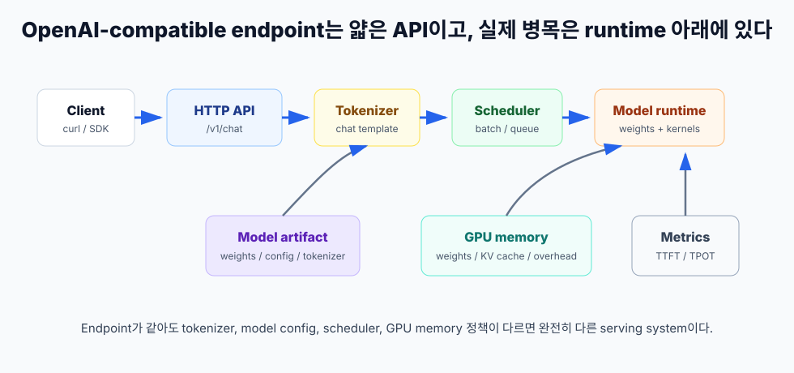
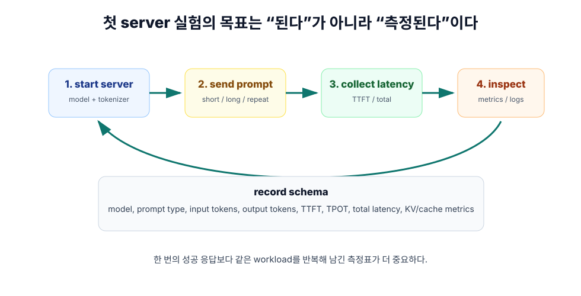

6장. 첫 LLM server: OpenAI-compatible endpoint 만들기¶
모델을 API로 띄우는 첫 실습에서 가장 흔한 착각은 "응답이 오면 성공"이라고 보는 것이다. 물론 첫 응답은 중요하다. 하지만 AI 인프라 엔지니어에게 첫 server의 목표는 "된다"가 아니라 "측정된다"이다.
이 장에서는 vLLM의 OpenAI-compatible server를 기준으로 최소 serving stack을 만든다. 핵심은 명령어 하나를 외우는 것이 아니다. model artifact, tokenizer, runtime, scheduler, GPU memory, HTTP endpoint, client SDK가 어떤 관계인지 이해하는 것이다. 같은 /v1/chat/completions endpoint를 열어도 내부 runtime 설정이 다르면 capacity와 latency는 완전히 달라진다.
이 장의 독자 질문은 다음과 같다.
모델을 로컬 또는 서버 GPU에서 API로 띄우려면 최소 구성은 무엇이고, 첫 실험에서 무엇을 기록해야 하는가?
OpenAI-compatible endpoint가 숨기는 것¶
OpenAI-compatible endpoint는 application 개발자에게 편하다. 기존 OpenAI SDK를 거의 그대로 쓰고, base_url만 바꾸면 local server나 private GPU server를 호출할 수 있다. vLLM quickstart도 OpenAI API protocol을 구현하는 server로 배포할 수 있고, 기본적으로 http://localhost:8000에서 시작하며 --host, --port로 주소를 지정할 수 있다고 설명한다.
하지만 이 편리함은 동시에 위험하다. API 모양이 같다고 내부 system이 같은 것은 아니다.
| 겉으로 보이는 것 | 실제로 결정해야 하는 것 |
|---|---|
/v1/chat/completions |
tokenizer, chat template, model config |
model 문자열 |
weight 위치, precision, trust policy |
messages 배열 |
prompt serialization, input token count |
max_tokens |
decode 길이, KV cache 수명 |
temperature |
sampling policy, 재현성 |
| HTTP 응답 | scheduler, GPU memory, queueing, metrics |
Application 개발자는 endpoint contract를 본다. AI 인프라 엔지니어는 endpoint 아래의 capacity contract를 봐야 한다.

첫 server의 구성 요소¶
첫 LLM server를 띄울 때 필요한 구성 요소는 여섯 가지다.
Model artifact¶
Model artifact는 단순히 weight 파일 하나가 아니다. 보통 다음을 포함한다.
- model weights
- model config
- tokenizer
- tokenizer config
- chat template
- generation config
- special token 정의
Serving runtime은 이 묶음을 읽어 model을 초기화한다. tokenizer와 chat template이 맞지 않으면 같은 messages를 보내도 완전히 다른 prompt token sequence가 만들어질 수 있다. 따라서 model artifact는 "모델 파일"이 아니라 "입력을 어떤 token sequence로 바꿀지까지 포함한 실행 단위"로 봐야 한다.
Runtime¶
Runtime은 model을 GPU에서 실행하는 엔진이다. 이 장에서는 vLLM을 기준으로 설명한다. vLLM은 OpenAI-compatible server를 제공하고, PagedAttention, scheduler, batching, KV cache 관리, metrics 같은 serving 기능을 포함한다.
Runtime을 선택하면 다음 질문도 따라온다.
- 어떤 attention backend를 쓸 것인가?
- GPU memory utilization을 어느 정도까지 허용할 것인가?
- max model length를 어떻게 제한할 것인가?
- prefix caching, quantization, speculative decoding 같은 기능을 켤 것인가?
- metrics를 어디로 노출하고 어떻게 수집할 것인가?
첫 실습에서는 기능을 많이 켜지 않는다. baseline을 먼저 만든다.
HTTP endpoint¶
HTTP endpoint는 application과 runtime 사이의 계약이다. vLLM quickstart 기준으로 server는 OpenAI API 형식으로 model list, chat completion, completion endpoint를 제공한다. 따라서 OpenAI SDK를 쓰는 application은 base_url을 local server로 바꿔 호출할 수 있다.
하지만 endpoint를 열었다고 production server가 된 것은 아니다. 인증, rate limit, timeout, logging, tracing, load balancing, model rollout은 아직 없다. 첫 server는 "실험 가능한 단일 runtime"이다.
Client¶
Client는 curl일 수도 있고 Python OpenAI SDK일 수도 있다. 첫 실험에서는 둘 다 써 보는 것이 좋다.
curl은 HTTP payload와 응답을 직접 확인하기 좋다.- SDK는 실제 application integration과 가까운 형태를 확인하기 좋다.
Client에서 반드시 기록해야 하는 것은 응답 text가 아니다. request payload, latency, token count, error 여부다.
GPU memory¶
5장에서 본 것처럼 GPU memory에는 weight만 올라가지 않는다. KV cache, runtime overhead, temporary buffer, allocator 여유분이 함께 들어간다. 첫 server에서 nvidia-smi만 보는 것은 부족하지만, 그래도 시작점으로는 유용하다.
첫 실험에서는 다음을 기록한다.
- server 시작 직후 GPU memory
- 첫 요청 후 GPU memory
- 긴 prompt 요청 후 GPU memory
- 동시 요청 또는 반복 요청 후 GPU memory
정확한 원인 분석은 runtime metrics와 함께 해야 하지만, GPU memory 변화 감각은 초반에 꼭 잡아야 한다.
Metrics¶
vLLM production metrics 문서는 OpenAI-compatible API server의 /metrics endpoint를 통해 system health를 모니터링할 수 있다고 설명한다. 이 metrics에는 request success, KV cache usage, running/waiting requests, e2e latency, inter-token latency, prefill/decode time, TTFT 등이 포함된다.
첫 server 실험에서 metrics를 보는 이유는 간단하다. "느리다"를 "queue에서 기다렸다", "prefill이 길었다", "decode가 느렸다", "KV cache가 찼다"로 나누기 위해서다.
최소 실행 흐름¶
vLLM quickstart의 online serving 예시는 다음 형태로 server를 시작한다.
vllm serve Qwen/Qwen2.5-1.5B-Instruct
이 명령은 Hugging Face model id를 받아 server를 시작한다. 공식 quickstart는 이 예시에서 Qwen/Qwen2.5-1.5B-Instruct를 사용한다. 실제 실습에서는 GPU VRAM, network access, license, 조직 정책에 맞는 작은 instruct model을 선택해야 한다.
첫 실행에서는 다음처럼 옵션을 명시하는 편이 좋다.
vllm serve Qwen/Qwen2.5-1.5B-Instruct \
--host 0.0.0.0 \
--port 8000 \
--generation-config vllm
--generation-config vllm을 넣는 이유는 baseline을 분명하게 만들기 위해서다. vLLM quickstart는 Hugging Face repository에 generation_config.json이 있으면 기본 sampling parameter가 model creator 권장값으로 override될 수 있고, 이를 비활성화하려면 --generation-config vllm을 넘기라고 설명한다. 첫 측정에서는 숨은 기본값을 줄이는 편이 좋다.
이 명령은 production 권장 설정이 아니다. 첫 baseline을 만들기 위한 최소 시작점이다.
Server가 떴는지 확인하기¶
서버가 뜨면 먼저 model list endpoint를 확인한다.
curl http://localhost:8000/v1/models
이 요청은 model이 실제로 API server에 등록됐는지 확인한다. 여기서 실패하면 chat completion을 볼 필요가 없다. 먼저 server log, model download, GPU memory, port binding, Python environment를 확인해야 한다.
다음으로 chat completion을 보낸다.
curl http://localhost:8000/v1/chat/completions \
-H "Content-Type: application/json" \
-d '{
"model": "Qwen/Qwen2.5-1.5B-Instruct",
"messages": [
{"role": "system", "content": "You are a concise assistant."},
{"role": "user", "content": "KV cache를 한 문장으로 설명해 줘."}
],
"max_tokens": 128,
"temperature": 0
}'
첫 응답에서 확인할 것은 세 가지다.
- HTTP status가 정상인가?
- 응답 schema가 application이 기대하는 형태인가?
- usage 또는 token count를 기록할 수 있는가?
내용 품질 평가는 나중 문제다. 지금은 server contract와 측정 가능성이 먼저다.
Python SDK로 호출하기¶
Application과 가까운 형태는 Python OpenAI SDK다. vLLM quickstart도 base_url을 local vLLM server로 바꾸는 예시를 제공한다.
from openai import OpenAI
client = OpenAI(
api_key="EMPTY",
base_url="http://localhost:8000/v1",
)
response = client.chat.completions.create(
model="Qwen/Qwen2.5-1.5B-Instruct",
messages=[
{"role": "system", "content": "You are a concise assistant."},
{"role": "user", "content": "KV cache를 한 문장으로 설명해 줘."},
],
max_tokens=128,
temperature=0,
)
print(response.choices[0].message.content)
print(response.usage)
여기서 api_key="EMPTY"는 local test에서 흔히 쓰는 placeholder다. 실제 shared server에서는 key 없이 열어 두면 안 된다. vLLM quickstart는 --api-key 또는 VLLM_API_KEY로 API key 검사를 켤 수 있다고 설명한다. 혼자 쓰는 localhost와 팀이 쓰는 server는 security contract가 다르다.
첫 실험에서 기록할 표¶
첫 server 실험에서 가장 중요한 산출물은 실행 명령이 아니라 기록표다.

다음 표를 만든다.
| 항목 | 기록 예시 | 왜 필요한가 |
|---|---|---|
| model id | Qwen/Qwen2.5-1.5B-Instruct |
model config와 tokenizer 추적 |
| server command | vllm serve ... |
재현성 |
| GPU | A10, L4, A100 등 |
hardware 비교 |
| dtype/quantization | BF16, FP16, AWQ 등 | memory와 kernel 영향 |
| max model length | runtime 설정값 | KV cache budget |
| prompt type | short chat, long RAG 등 | workload 분리 |
| input tokens | prompt token count | prefill/KV cache |
| output tokens | generated token count | decode 시간 |
| TTFT | 첫 token까지 시간 | 사용자 체감 시작점 |
| TPOT | output token당 시간 | decode 병목 |
| total latency | 전체 응답 시간 | product SLA |
| server metrics snapshot | /metrics 일부 |
queue, cache, request state |
이 표가 있어야 7장에서 benchmark를 의미 있게 읽을 수 있다.
TTFT를 간단히 재는 streaming client¶
curl만으로도 대략적인 전체 latency는 볼 수 있다. 하지만 TTFT를 보려면 streaming 응답의 첫 chunk 시간을 기록하는 편이 좋다. 아래 코드는 실습용 skeleton이다.
import time
from openai import OpenAI
client = OpenAI(api_key="EMPTY", base_url="http://localhost:8000/v1")
started = time.perf_counter()
first_token_at = None
output_chars = 0
stream = client.chat.completions.create(
model="Qwen/Qwen2.5-1.5B-Instruct",
messages=[
{"role": "system", "content": "You are a concise assistant."},
{"role": "user", "content": "KV cache와 prefill/decode의 관계를 설명해 줘."},
],
max_tokens=256,
temperature=0,
stream=True,
)
for chunk in stream:
delta = chunk.choices[0].delta.content or ""
if delta and first_token_at is None:
first_token_at = time.perf_counter()
output_chars += len(delta)
ended = time.perf_counter()
print({
"ttft_seconds": None if first_token_at is None else first_token_at - started,
"total_latency_seconds": ended - started,
"output_chars": output_chars,
})
이 코드는 완전한 benchmark가 아니다. token count 대신 character count를 임시로 기록하고, network overhead와 client overhead도 섞여 있다. 하지만 첫 실험에서는 충분히 좋은 출발점이다. 다음 장에서 더 엄밀한 benchmark 설계로 넘어간다.
/metrics를 같이 봐야 하는 이유¶
Client에서 보이는 latency만으로는 병목을 알 수 없다. vLLM metrics endpoint를 같이 확인한다.
curl http://localhost:8000/metrics
첫 실험에서 특히 볼 만한 항목은 다음과 같다.
| metric | 해석 |
|---|---|
vllm:time_to_first_token_seconds |
TTFT histogram |
vllm:request_time_per_output_token_seconds |
request별 TPOT |
vllm:e2e_request_latency_seconds |
end-to-end latency |
vllm:request_prefill_time_seconds |
prefill 단계 시간 |
vllm:request_decode_time_seconds |
decode 단계 시간 |
vllm:kv_cache_usage_perc |
KV cache 사용률 |
vllm:num_requests_running |
실행 batch 안의 request 수 |
vllm:num_requests_waiting |
대기 중인 request 수 |
vllm:request_prompt_tokens |
prompt token 분포 |
vllm:request_generation_tokens |
generation token 분포 |
이 metrics는 5장에서 만든 mental model을 실제 server에 붙여 준다. TTFT가 나쁜지, TPOT가 나쁜지, queue가 쌓이는지, KV cache가 찼는지 분리할 수 있다.
Serving config는 code가 아니라 capacity contract다¶
첫 server에서 설정값을 무심코 넘기면 나중에 재현이 어렵다. 다음 설정은 반드시 기록해야 한다.
model¶
Model id는 단순 이름이 아니다. weight, config, tokenizer, chat template, generation config를 함께 가리킨다. 같은 model family라도 instruct/base, quantized/non-quantized, revision에 따라 serving 결과가 달라진다.
max_model_len¶
최대 context length는 product 기능처럼 보이지만 사실은 KV cache budget이다. 너무 크게 잡으면 긴 request를 받을 수는 있지만 동시성이 줄고 tail latency가 악화될 수 있다.
gpu_memory_utilization¶
GPU memory를 얼마나 공격적으로 쓸지 정한다. 높게 잡으면 capacity는 늘 수 있지만 OOM, fragmentation, 다른 process와의 충돌 위험도 커진다.
dtype과 quantization¶
Weight dtype과 quantization은 memory footprint와 kernel path를 바꾼다. 5장에서 봤듯 KV cache dtype도 별도 축이다. "작아진다"와 "빨라진다"는 같은 말이 아니다.
generation_config¶
Sampling 기본값이 model repository의 generation_config.json에서 올 수 있다. baseline 측정에서는 이 차이를 명확히 해야 한다. 실험 결과를 비교할 때 temperature, top_p, max_tokens가 달라지면 latency와 output length도 달라진다.
API key와 binding¶
localhost에만 띄우는 실험과 0.0.0.0으로 팀 네트워크에 여는 server는 보안 의미가 다르다. shared server라면 API key, firewall, reverse proxy, TLS, access log를 별도 과제로 잡아야 한다.
첫 실험 workload 세트¶
첫 server를 띄웠다면 하나의 prompt만 보내지 않는다. 최소 세 workload를 보낸다.
| workload | 목적 | 예시 |
|---|---|---|
| short chat | 기본 endpoint latency 확인 | 200-500 input tokens, 100 output tokens |
| long prompt | prefill과 KV cache pressure 확인 | 4k-16k input tokens, 짧은 답변 |
| repeated prefix | prefix caching 후보 확인 | 같은 system/document prefix, 다른 질문 |
아직 load test를 하지 않아도 된다. 각 workload를 5-10회 반복해 기록하면 충분하다. 이 작은 표만 있어도 다음 장에서 benchmark 곡선을 읽을 준비가 된다.
실패하면 어디를 볼 것인가¶
첫 server 실습은 자주 실패한다. 실패 자체는 문제가 아니다. 문제는 실패가 어느 계층에서 났는지 모르는 것이다.
| 증상 | 먼저 볼 곳 | 흔한 원인 |
|---|---|---|
| server가 시작하지 않음 | install, CUDA, model download | Python/CUDA mismatch, network, disk |
| model load 중 OOM | GPU memory, dtype, model size | weight가 GPU에 올라가지 않음 |
/v1/models 실패 |
server log, port binding | server 미기동, port 충돌 |
| chat template error | tokenizer, model type | template 누락 또는 메시지 형식 불일치 |
| 첫 token이 너무 느림 | input token, queue, prefill | 긴 prompt, cold start |
| token 생성이 느림 | TPOT, GPU utilization, backend | decode 병목, attention backend |
| 같은 prompt 결과가 다름 | sampling config | temperature/top_p/default generation config |
이 표는 troubleshooting을 빠르게 만든다. "vLLM이 안 된다"보다 "model load OOM이다", "chat template 문제다", "decode backend 문제다"라고 말할 수 있어야 한다.
llama.cpp와 비교하면 무엇이 보이는가¶
이 장의 baseline은 vLLM이다. 하지만 local inference에서 llama.cpp 같은 runtime을 만나는 경우도 많다. 두 도구를 단순히 "어느 쪽이 빠른가"로 비교하면 안 된다.
vLLM은 GPU server와 online serving baseline으로 이해하는 것이 좋다. OpenAI-compatible API, batching, scheduler, KV cache 관리, metrics, multi-GPU 확장 같은 production serving 요소를 다룬다.
llama.cpp는 local/edge inference와 GGUF ecosystem에서 강하다. CPU, Apple Silicon, partial offload, local quantized model 실행 같은 맥락에서 자주 쓰인다.
비교 질문은 다음처럼 잡아야 한다.
- 내 목표는 developer laptop local inference인가, shared GPU API server인가?
- 동시 요청을 batch로 처리해야 하는가?
- OpenAI-compatible API만 필요한가, production metrics와 scheduler도 필요한가?
- model format과 quantization workflow는 무엇인가?
- 운영 대상이 단일 사용자 desktop인가, 여러 tenant가 쓰는 server인가?
이 책에서는 vLLM을 먼저 baseline으로 둔다. 이유는 production LLM serving의 병목을 scheduler, KV cache, metrics와 함께 설명하기 좋기 때문이다.
이 장의 결론¶
첫 LLM server는 모델을 "띄우는" 단계가 아니라 serving system을 "측정 가능한 상태로 만드는" 단계다.
- OpenAI-compatible endpoint는 application integration을 쉽게 하지만 runtime 차이를 숨긴다.
- Model artifact는 weight뿐 아니라 config, tokenizer, chat template, generation config를 포함한다.
- 첫 baseline에서는 server command, model id, GPU, dtype, max context, prompt shape, latency, token count를 기록해야 한다.
- TTFT와 TPOT를 분리하려면 streaming client와
/metrics를 함께 보는 것이 좋다. - Serving config는 code snippet이 아니라 capacity contract다.
- 첫 workload는 short chat, long prompt, repeated prefix로 나누어야 한다.
다음 장에서는 이 측정값을 더 체계적으로 다룬다. TTFT, TPOT, throughput, p95/p99 latency를 분리하고, benchmark 결과를 어떻게 읽어야 하는지 정리한다.